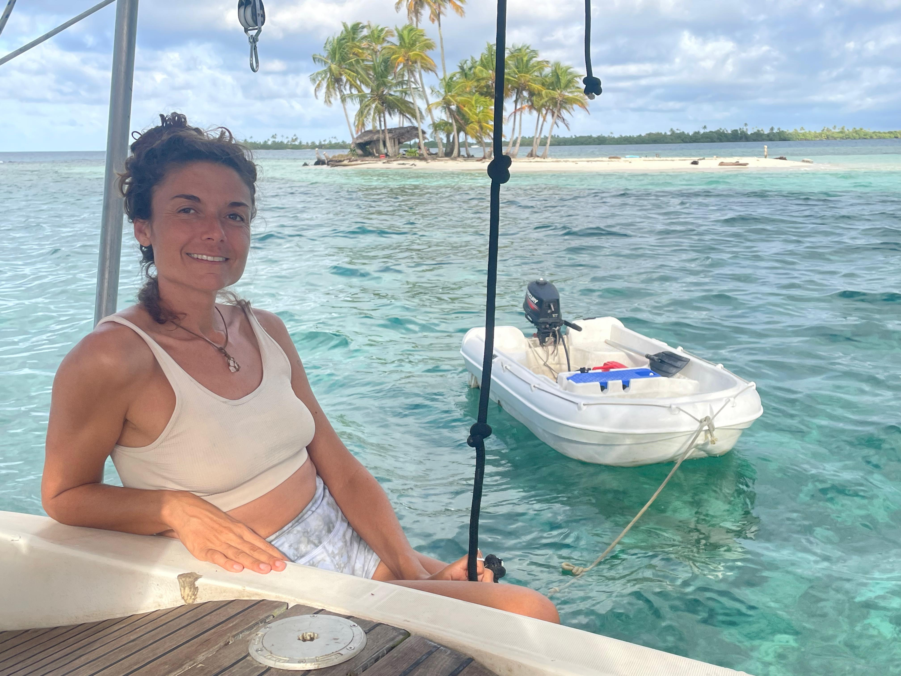
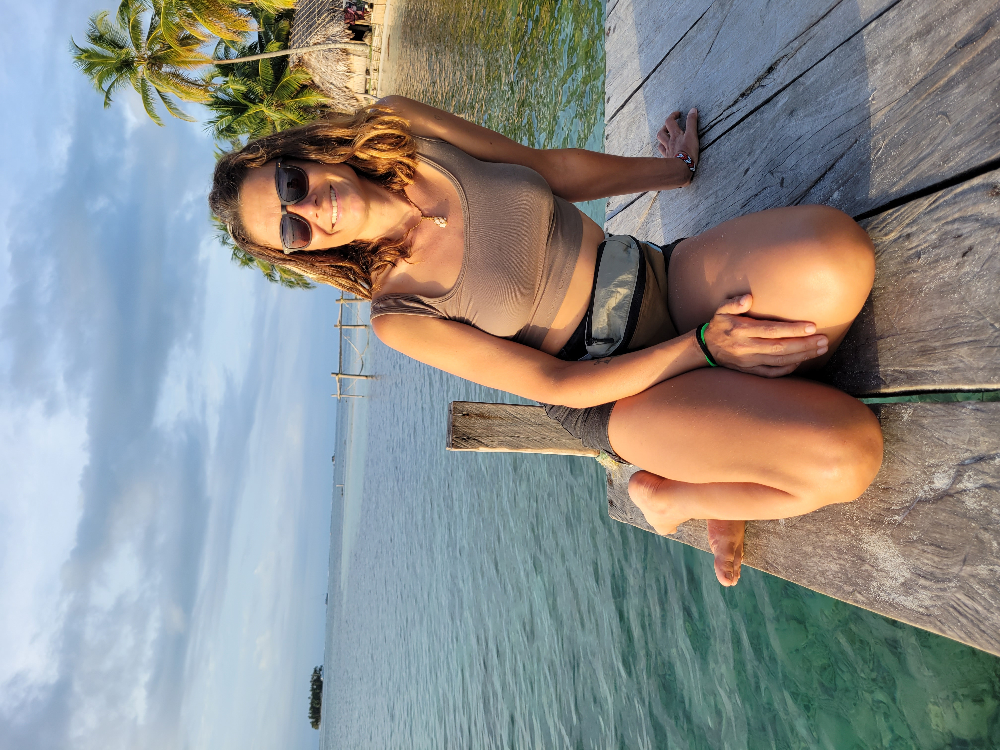
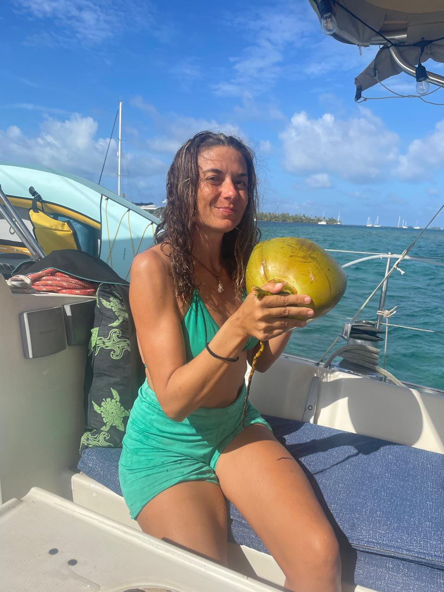
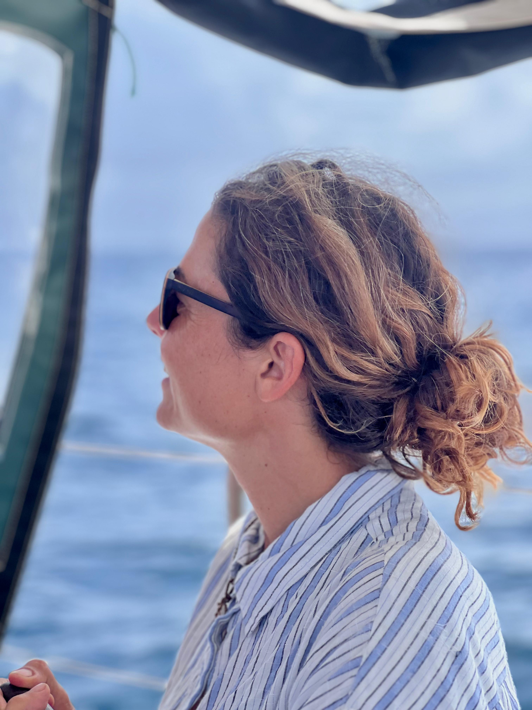
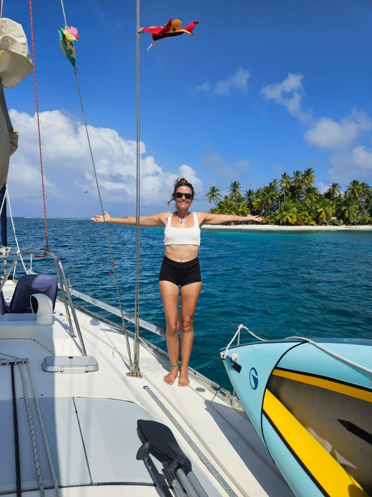
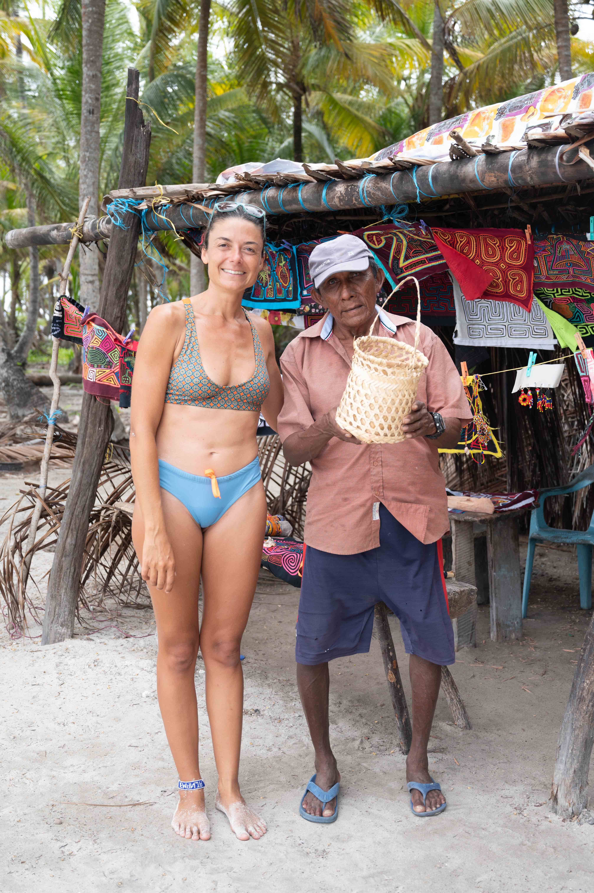
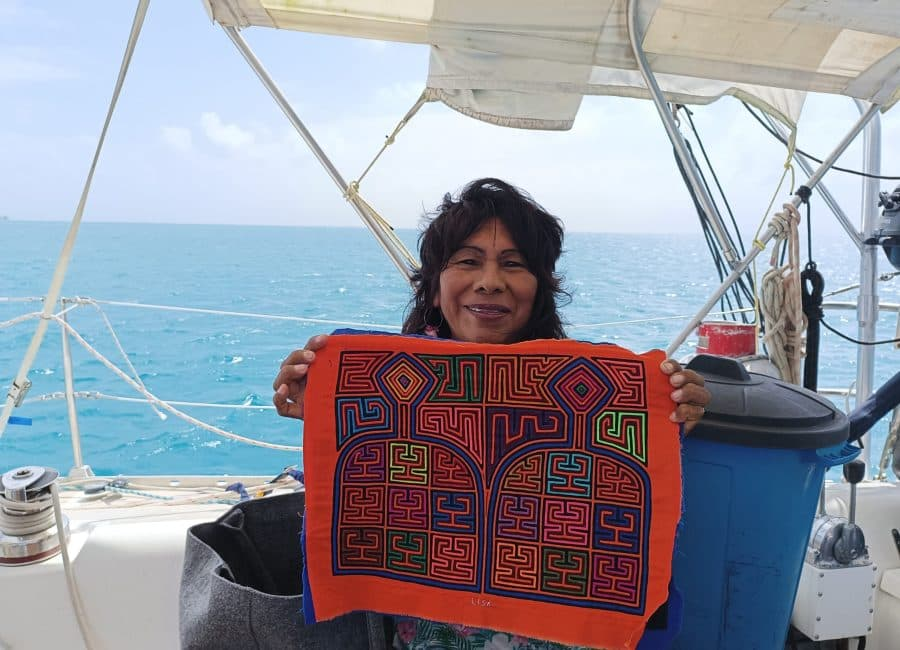

Navegamos a vela
Un viaje auténtico, despertando cada día en un paraíso diferente.
Conoce a la capitanaUn viaje auténtico, despertando cada día en un paraíso diferente.
Conoce a la capitana





Soy Guadalupe, pero todos me llaman Lupe. En 2016 dejé Argentina con una bicicleta, una mochila y un sueño, y finalmente encontré mi hogar en San Blas. Hoy soy capitana de mi propio velero y ofrezco aventuras de navegación auténticas con una visión consciente. A bordo, priorizamos los productos ecológicos y una alimentación fresca y saludable. Y si mi velero está completo, con gusto te ayudo a encontrar el velero ideal con capitanes locales de confianza.





Un territorio indígena autónomo en el Caribe. Naturaleza pura. Cultura viva. Belleza preservada.
El océano es el corazón de su mundo. Pesca, cayucos de madera y vida en las islas.
Un vínculo auténtico con la comunidad Guna. Recibidos como amigos, no solo como visitantes.
Tours en la selva, islas escondidas, cocina local y momentos culturales con personas como Lisa.
Confort y tranquilidad a bordo de un hermoso velero por la noche.
Un territorio indígena autónomo en el Caribe formado por más de 365 islas, una para cada día del año.
No solo unas vacaciones. Una verdadera aventura caribeña con alma.
Las mujeres son el corazón de la sociedad Guna, guardianas de la tradición, la familia y las famosas molas.